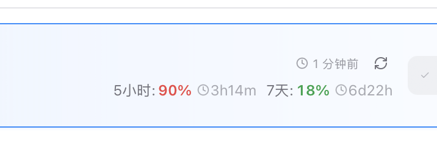
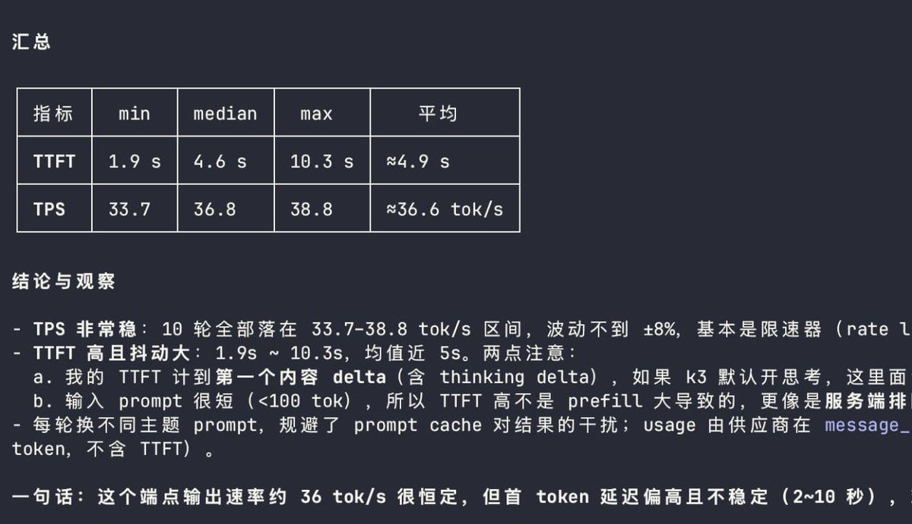
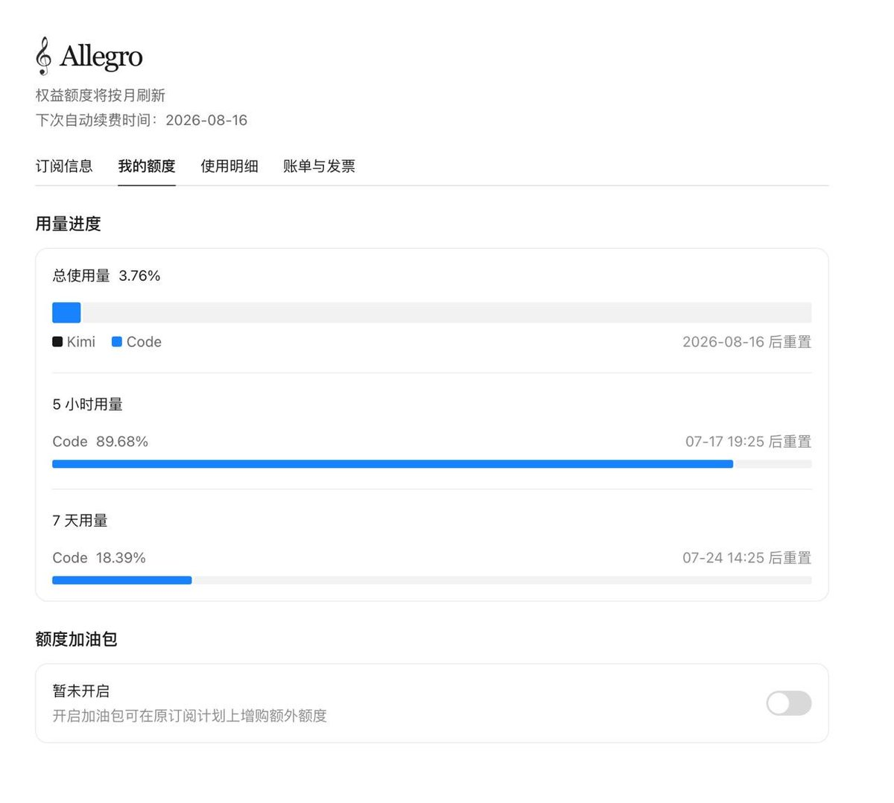

Wilf Lin
@Wilf_Lin
@qqqqqf_ 毕竟能力和尺寸摆在这，不可能便宜了。让我们期待DeepSeek V4



清凤
@qqqqqf_
来评价一下 kimi k3
1.他的 long horizon/context 不如 claude,但强于上一代模型,可以明显看出在长程任务后会出现性能下降和逻辑混乱
2.似乎有一些过度遵循用户 prompt,这导致了和 fable 极端不同的一点,fable 看起来拥有自己的主见,而 k3 则在这一点上不够强
3.因此,k3 在人们使用 claude 的 https://t.co/VQTglHuM7V